Log Explorer Module
The Log Explorer Module, a central element of UTMStack, is purpose-built to deliver an exhaustive and comprehensive view of an organization’s log data. This dynamic, highly interactive tool is engineered to provide real-time visibility into log data, allowing for immediate filtering and nuanced analysis. Its central role in the proactive monitoring and effective management of network activities is indispensable to a well-maintained cybersecurity infrastructure.
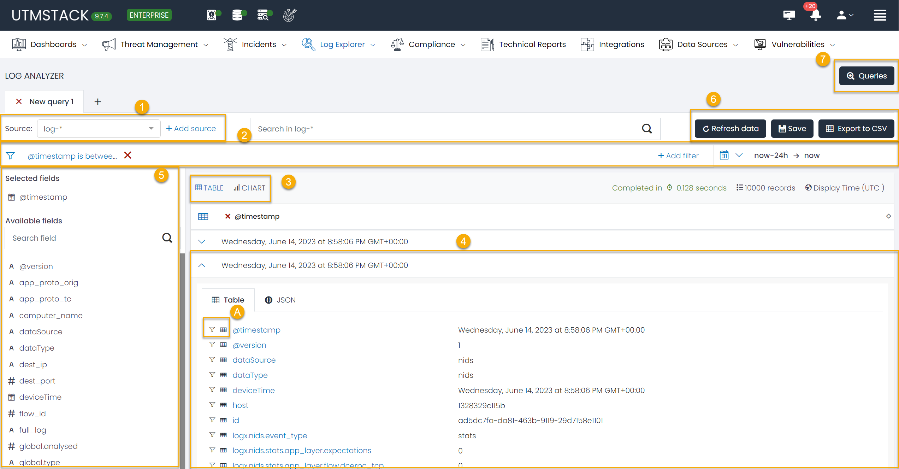
Overview
The Log Explorer interface has been thoughtfully designed for seamless navigation and efficient functionality. The module’s centerpiece is the Data Grid, a feature offering an extensive view of an organization’s log data based on the defined datasource and query. This enables a logical grouping of queries based on user-defined filters, and the capacity to open multiple tabs for various queries. This level of customization empowers users to save their search criteria for future use, making the tool adaptable and time-efficient.
In a concerted effort to make data analysis as user-friendly as possible, the Log Explorer module provides visually intuitive representations of logs. Interactive charts and graphs facilitate an at-a-glance understanding of data trends and patterns, simplifying the task of data interpretation.
1. Source
A key aspect of the Log Explorer module is the source functionality. Serving as a crucial data filtering tool, it lets users narrow down their search to specific index patterns. For instance, users can confine their search, for example, to logs originating from Office365 exclusively, thereby eliminating unnecessary data noise.
In addition, this module offers the flexibility to create custom index patterns or sources. This allows users to define search parameters that cater to their specific needs, providing a level of personalization that ensures a more targeted and efficient search experience.
2. Filters
Serving as the backbone of the Log Explorer, the filtering functionality offers comprehensive data parsing based on the user’s search requirements. Filters can be defined to track logs from a specific computer, or to isolate logs pertaining to a specific operation, such as a log-in event. The versatility of these filters provides an unparalleled level of control over data analysis.
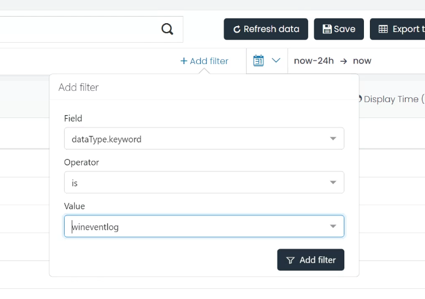
The Log Explorer module simplifies filter creation by providing the option to add a filter based on a specific log field with a single click. This degree of simplicity ensures that users can focus more on the analysis and less on the process.
3. Data Grid
The Data Grid is where the bulk of log information can be viewed, offering users the choice of viewing the data in a table or chart format. This visualization is predicated on a selected field, allowing for a high degree of customization. Users can also define the columns they want to see in the Table mode view, either through the Select fields option on the left, or by directly selecting a field in the log.
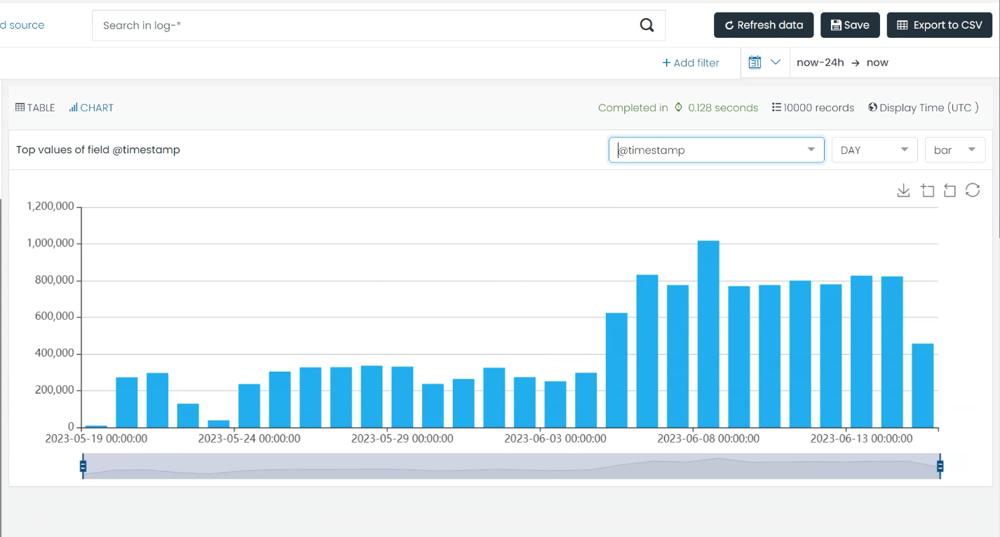
4 The Log
The Log section offers a comprehensive view of all log information, ranging from agent_id, process name, to the source IP. This data can be viewed in two ways – either in a table view or in a JSON mode – depending on the user’s preference.
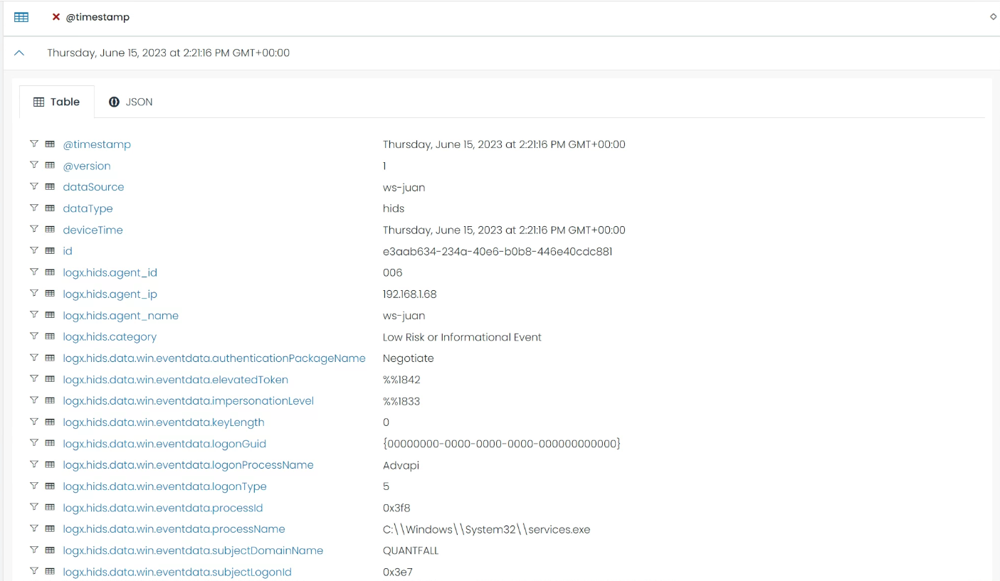
The Table mode offers the added benefit of allowing the user to add filters based on the field and value of a specific log, or to create a column in the Data Grid table based on a specific field.
4.1 Options
Each log field within the Log Explorer module provides two key options for users:
-
Adding a filter: Based on the field and value of a specific log, users can swiftly add a filter. This feature further fine-tunes the data presented in the Data Grid, refining the log data to fit the user’s specific needs.
-
Creating a column: Users can choose to create a new column in the Data Grid Table based on the field. This feature allows for immediate visibility and accessibility of key data points.
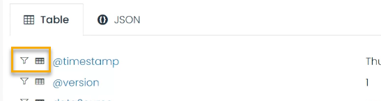
5. Personalize Fields
You can also add or remove columns in the Data Grid view, based on the fields of the logs.
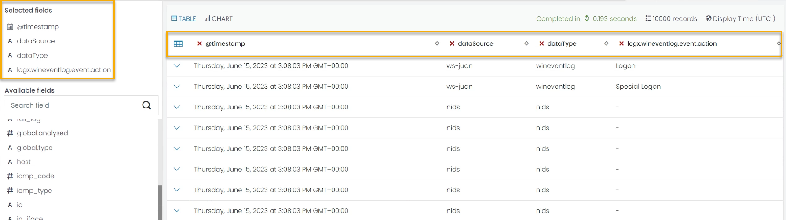
5. Save the information
Users can refresh their data, save the current query for future use, or export the current data to a CSV file for offline analysis.
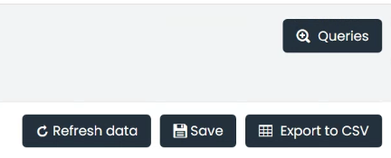
For example, a filter to view all Office365 log-in activities could be saved for future use, negating the need to repeat the filter creation process.
The option to view and manage stored queries also ensures that past investigations can be revisited with ease.
By offering these customizable options, the Log Explorer module delivers an adaptable interface that caters to the specific requirements of individual users. Whether it’s streamlining data analysis by focusing on certain values or enhancing visibility of crucial data, these options ensure a more efficient and tailored log exploration experience.
Office 365 Login Failure Analysis: Step-by-Step Guide Example
This example provides a comprehensive guide on how to utilize the Log Explorer module to create, configure, and save a query that focuses on all login failure events within Office 365 logs.
Step 1. Source Selection
In the Source field, type and select “log-o365-*” from the dropdown list. This sets the data source to all Office 365 logs.
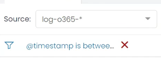
Step 2. Filter Configuration:
a. Click on the ‘Add Filter’ button.
b. In the Field dropdown, find and select logx.o365.Operation.keyword.
c. In the Operator dropdown, select is.
d. Type UserLoginFailed in the Value input box, indicating a login failure in your log system. Click Add Filter to apply this filter.
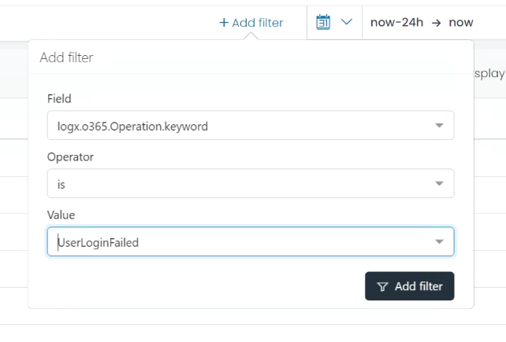
After these steps, all the logs about User login failures in Office 365 are displayed. Users can now personalize the columns they see for an easy overview.
Step 3. Column Selection
Option A:
a. Click on the ‘Select fields’ on the left side of the Data Grid.
b. From the dropdown list, find and select “Userid”, “Workload”, and “AuthenticationType”.
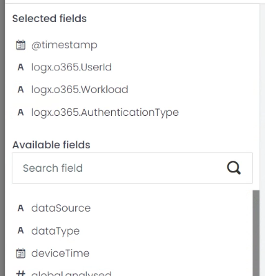
Option B:
a. In the Log list, switch to the Table mode view.
b. From the field list, find and press the table icon next to the fields “userid”, “workload”, and “authenticationType”.
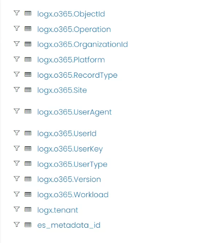
These fields will be added to your Data Grid view.
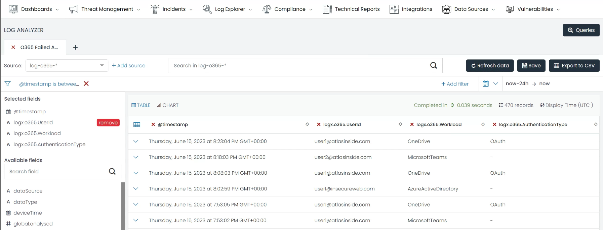
Save Query
Once your filters and columns are set up, click on the ‘Save’ button at the top right corner of the Data Grid.
b. In the pop-up box, give your query a unique name, such as “Office365 Login Failures”, and provide a brief description if needed. Click ‘Save’ to finalize the process.
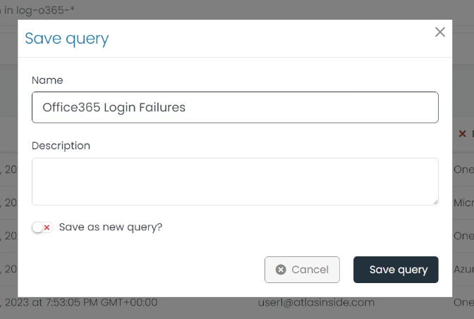
Now, you can go to the Query List view by clicking the Queries button in the top right corner and use that query whenever you need.
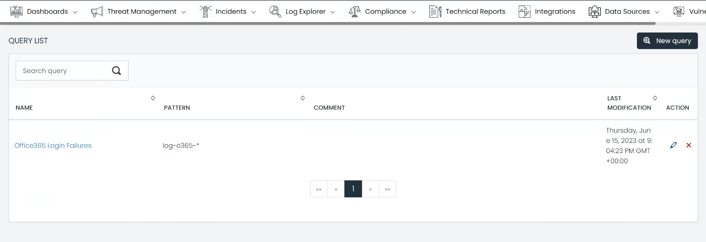